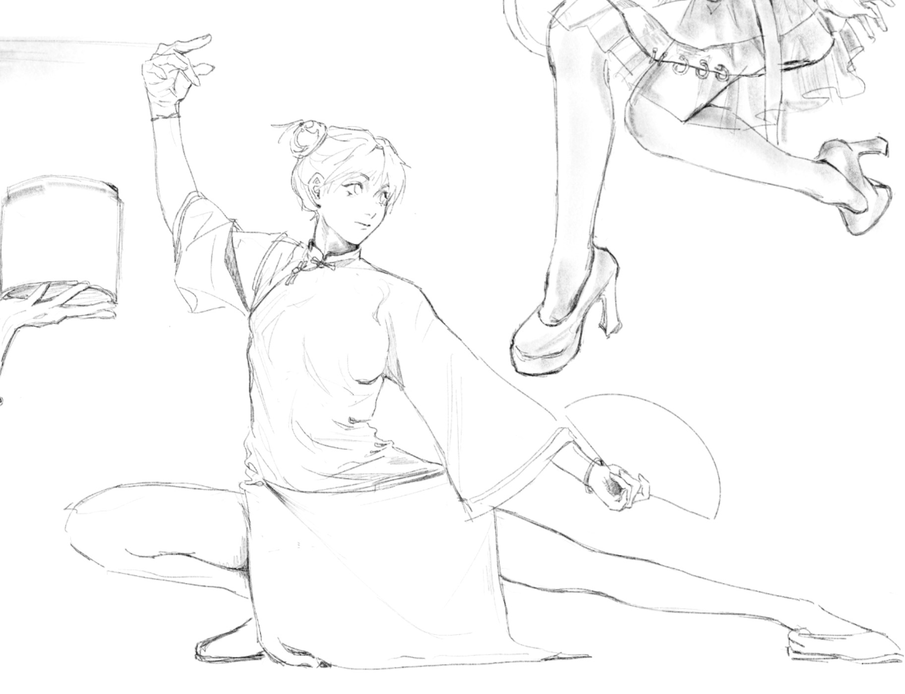

A Brief Bio
Like most young people in this world, I am lingering, exploring, and experiencing the world. I spent 18 years in China learning common knowledge, attending private and public schools, preparing for Gaokao and graduation. Everything was smooth as I passed all the exams, though I had few friends due to my speechless and sarcastic personality. I have been questioning about meanings of life and exploring natural science since I was tiny. And all my family members seemed to praise and love me a lot for my intelligence. The cocky kid was struck when first going abroad, to Pittsburgh for college, that she found the diverse assessment of people. It was a fun fact to me that attributes attached to people are not a thing. Fat, pretty, rich, and well-educated, they are attributes that determine nothing. It took me months to study the new environment and learn how to reserve my attitude toward everyone instead of jumping to a conclusion. I love the person I am right now thanks to the life in Pittsburgh.

Where Dream Begins: Sword Art Online
I watched Sword Art Online in the summer of my seventh grade when I was exposed to anime and manga for the first time. And that magnificent story struck me greatly. It changed how I viewed the world at the time and started my interest into anime culture.
In an age where reality and technology converge rapidly, few fictional works have captured humanity’s future as vividly as Sword Art Online (SAO). This series, created by Reki Kawahara in 2002, not only entertains but also predicts the rise of full-dive virtual reality—once a fantasy, now an emerging reality. SAO envisions a world where human senses are transported into a digital landscape via “NerveGear,” allowing players to live in a virtual world without affecting real life, just like a dream. In this realm, experiences like eating, flying, and even virtual intimacy mimic reality without risk, offering endless possibilities.
Beyond entertainment, SAO raises ethical and psychological questions about brain-computer interfaces and virtual consciousness. For instance, crimes committed in the virtual world blur the lines between reality and digital existence. What would happen when someone kills and steals a large amount of money online? Would they be punished to a lesser extent than in reality? What about cheating on someone virtually? The series explores identity, reality, and the boundaries of experience as it delves into the future of human existence in silicon-based worlds. SAO also provides insight into the metaverse, foreshadowing today’s Web 3 technologies and decentralized digital spaces. Sword Art Online not only reflects the future of gaming but also envisions a world where countless metaverses are interconnected, allowing individuals to log in with the same identity across different realms. From these complex worldlines, one can construct a three-dimensional digital self, a clone indistinguishable from the real world.
Click here to download the document of my encomium👇
Sword Art Online: Prelude of Next Century
From Anime to Life

After middle school, I started to draw anime art. There were many great artists I could follow on the internet, like the artists who drew SAO. At that time, I was urging for the style of my favorite artist and practiced every day to imitate and achieve her level. She never made any mistakes in her artwork, as if everything undergoes delicate design. Her genius sense of colors and professional understanding of human anatomy always surprised me in every piece of her artwork. Because of that, I require my drawing to be correct and flawless as well. Any misrepresented relationships of light and shadow and human anatomy will disappoint me, and this perfectionism extends to many aspects of my life. The decoration of my bedroom, makeup, everyday outfits, and even my boyfriend can represent my taste and attitude towards life. My pursuit of “looking good” has reached what could almost be described as an absurd level.

Drawing: My Spiritual Homeland
At first, I was just doodling and scribbling on paper, even drawing on the walls of my home, until my mom had to replace the wallpaper. Later when I was in primary school, I was sent to learn sketching, oil painting, and then crafts. It was about high school when I got my first Wacom tablet and an iPad that I transformed into e-painting, and I’ve been creating images ever since. Looking back at my childhood drawings, I still marvel at the inspired strokes and the scenes filled with childlike imagination, though I didn’t think about these at first but just wanted to earn praise from my teachers.
Drawing is something to me. It’s undeniable that drawing has become an indispensable part of my life, without which my soul would wither away. Within a limited frame, how can one trigger the feelings and visual effects to the biggest extent? How can colors, shapes and shadows integrate to reach the wanted effect? How to present the most information one wants to give by adding the least stokes or modifications? I am still obsessed with these questions. The planar image itself is the best medium in the world for me to obtain information.
All the way here
I met one of my best friends, Lan, during my gap year. I was admitted to a Chinese college called East China University of Political Science and Law (ECUPL) that year, but I was preparing to go abroad, and Lan was my roommate. We shared the same hobbies, like drawing and watching anime, and surprisingly found our common interest in the virtual world. We talked about our artworks day and night, admiring each other for our flashes of inspiration. We sat back to back, drew until late night. Also, it was the easiest and happiest year after Gaokao because I didn't need the degree in ECUPL, so I barely stressed about exams and homework.
I left ECUPL a year and a half ago, and I still miss Lan. She was the first friend on my way to the virtual world who admitted my talent and respected my efforts. The day I left campus, I left a gift for her, which was a poster card I printed by myself. The following image is what I drew and printed out on the card, Lan's favorite V-tuber. I texted her on her birthday to open my drawer, and the gift was hidden there in advance. She barely spoke a word. Neither did I. There was much more than words could say.